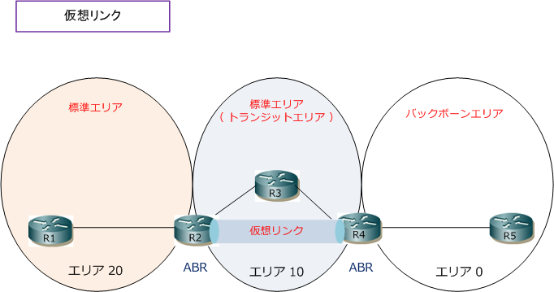
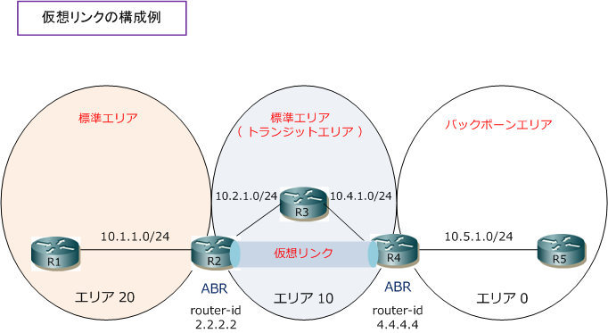

OSPF - virtual-link
OSPF - 仮想リンクとは
OSPFでは、全てのエリアが必ずバックボーンエリア（ エリア 0 ）に直接接続している必要があります。 しかし、設計の段階で想定し得なかったエリアの拡大などで、エリア 0に直接接続できないエリアが発生 する場合もあります。そのような場合に仮想リンクの技術を導入することで2台のABR間に論理リンクを 確立させてエリア0への到達性を実現できます。なお、仮想リンクを確立する上で、リンクの両端の2台の ABRはOSPFネイバー同士が直接接続している必要はありません。
OSPF - 仮想リンクの接続例
下図で、エリア20はバックボーンエリアに接続していない状態であり、エリア20だけに配置されたR1は エリア0とエリア10のOSPFルートを受信できない状態にあります。そこでR2とR4との間で仮想リンクを 確立させます。下図のように、仮想リンクを確立するOSPFルータはABRであり、ABR間は直接接続して いる必要はありません。仮想リンクでOSPFパケットが通過するエリアはトランジットエリアと言います。

OSPF - 仮想リンクの設定
仮想リンクを設定するためには、トランジットエリアと対向側のルータ IDを指定する必要があります。
OSPF - 仮想リンクの設定
(config)# router ospf procces-id (config-router)# area area-id virtual-link router-id [ hello-interval seconds | retransmit-interval seconds | transmit-delay seconds | dead-interval seconds | ttl-security hops ]
| コマンド引数 | 説明 |
|---|---|
| area-id | トランジットエリアのエリア番号を設定 |
| router-id | 対向側のABRのルータIDを設定 |
| hello-interval | 任意：仮想リンクのインターフェースで送信するHelloインターバルの値（ デフォルトは10秒 ） |
| retransmit-interval | 任意：仮想リンクのインターフェースで送信するLSAの再送信間隔（ デフォルトは 5秒 ） |
| transmit-delay | 任意：仮想リンクのインターフェースでLSUを送信するために必要と推定される時間（デフォルトは1秒） |
| dead-interval | 任意：仮想リンクのインターフェースのDeadインターバルの値（ デフォルトは40秒 ） |
| ttl-security hops | 任意：仮想リンクのインターフェースでの存続可能時間（TTL）の設定 |

OSPF - 仮想リンクの設定（R2とR4の設定例）
R2(config)# router ospf 1 R2(config-router)#area 10 virtual-link 4.4.4.4 R2(config-router)#network 10.1.1.254 0.0.0.0 area 20 R2(config-router)#network 10.2.1.254 0.0.0.0 area 10
R4(config)# router ospf 1 R4(config-router)#area 10 virtual-link 2.2.2.2 R4(config-router)#network 10.4.1.254 0.0.0.0 area 10 R4(config-router)#network 10.5.1.254 0.0.0.0 area 0
R2は、エリア0の所属インターフェースはありませんが、仮想リンク（area virtual-link）を設定することで エリア0のOSPFルートを受け取られます。仮想リンクを接続する2台のABRが正常に接続しているかどうかは show ip ospf virtual-link で「 up 」と「 Adjacency State Full（Hello suppressed）」であることを確認。